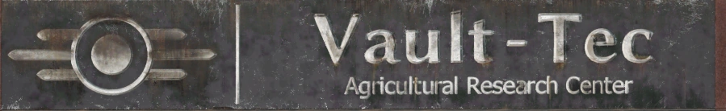
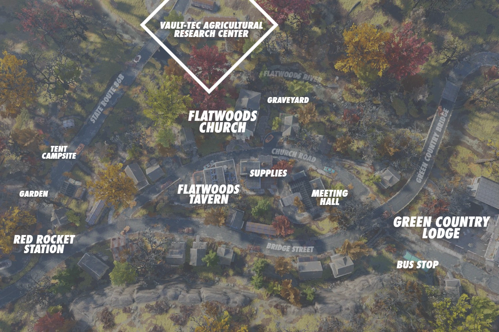
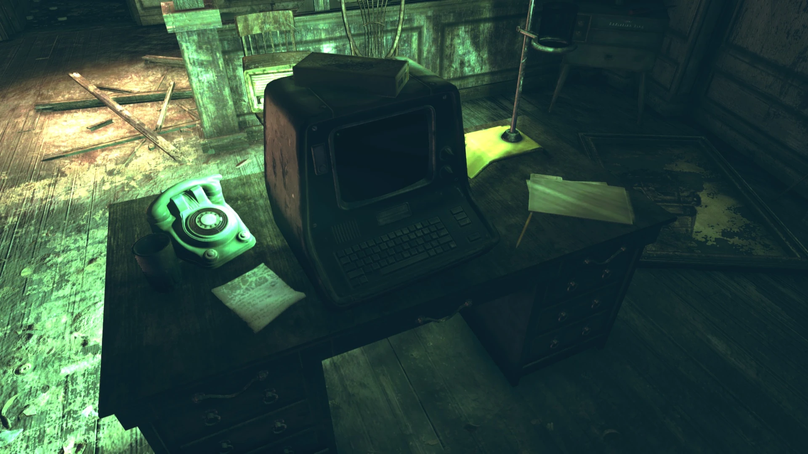
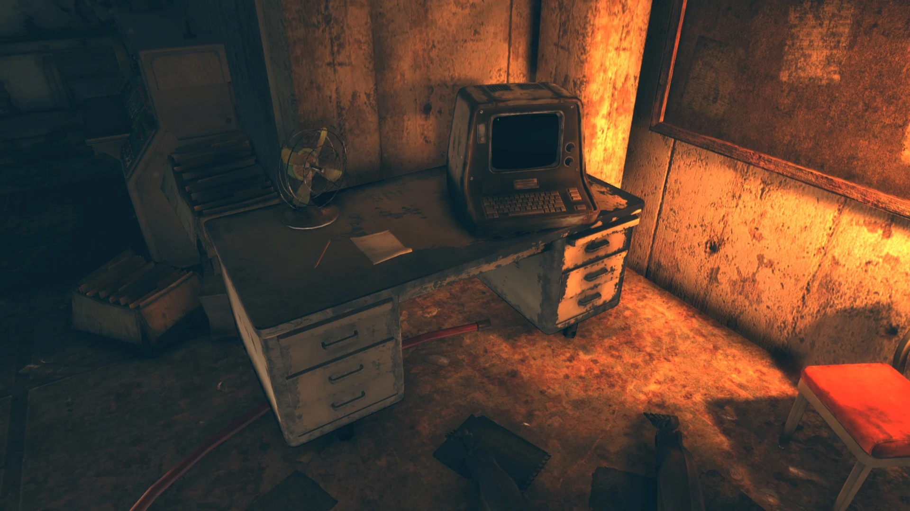
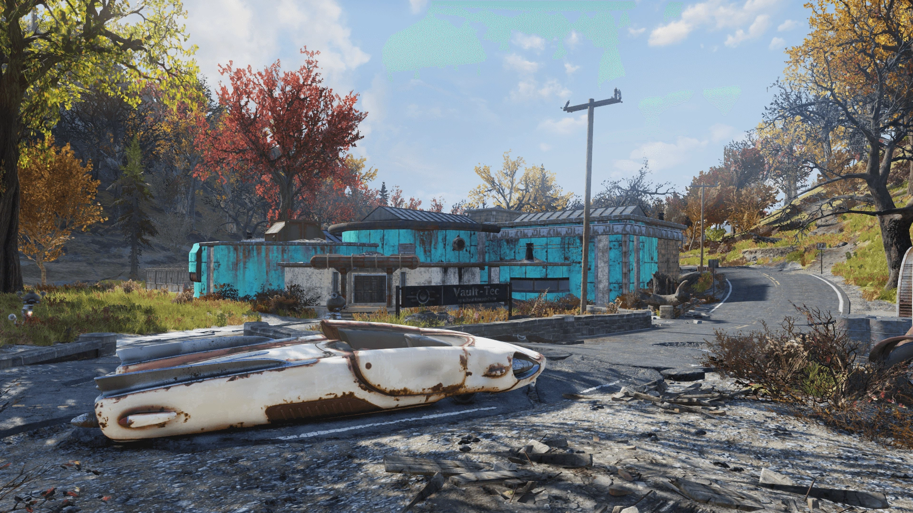
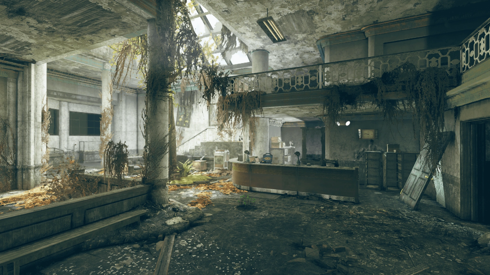
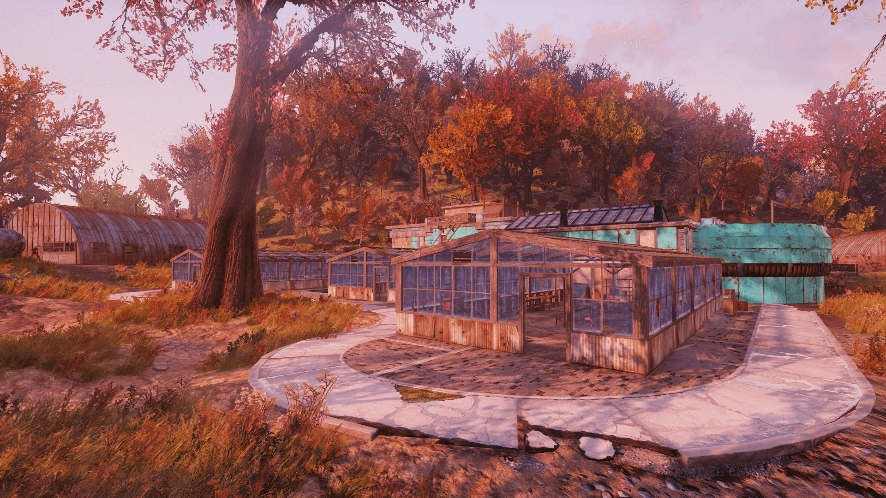
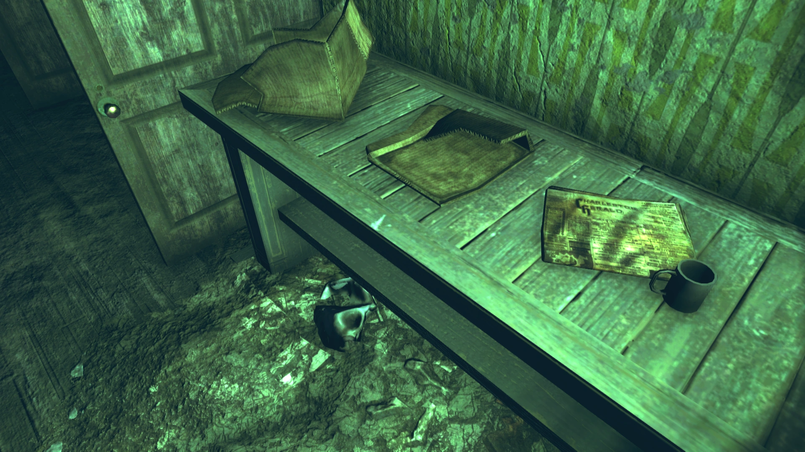
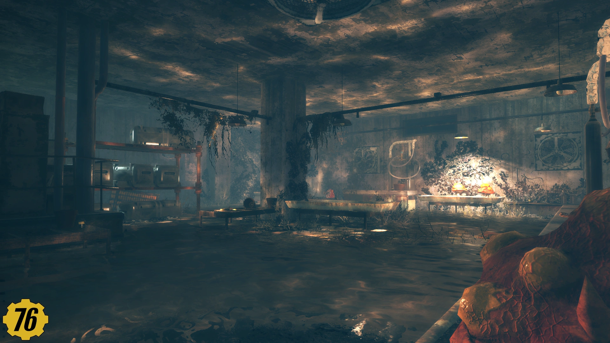

Vault-Tec Agricultural Research Center
Vault-Tec農業研究センター
Vault-Tec農業研究センターは、アパラチアの森林地帯に位置する、Vault-Tec社が運営していた企業R&Dセンターです。
大戦前、大規模農業の自動化実験を行っていた施設で、フラットウッズの南郊外にあります。
背景

戦前に作物の自動化と肥料開発を実験するために設立された施設で、小さな町フラットウッズの主要なランドマークの一つでした。
カスタマイズされたMr. Handyロボットの一種であるMr. Farmhandの艦隊が自動的に作物の世話をしていました。
肥料の散布、種まき、収穫までをほとんど人間の監視なしで行えるように設計されたシステムです。
大戦で施設はオフラインになりましたが、マクファデンという人物が飢えに苦しむ生存者を助けるために施設を再稼働させました。
しかしマクファデンには技術的な専門知識がなく、レスポンダーの助けを借りてロボットを再起動することがやっとでした。
彼はそれでも作業を続けましたが、スキル不足が災いし、最終的にFarmhandたちは暴走。
プロテクトロン・ハンディの監督官たちがロボットを解き放ち、施設の境界に侵入した者すべてを攻撃するようになってしまいました。
レイアウト

Vault-Tec農業研究センターは、メインビルと周囲の小屋や温室で構成されています。
温室にはもはや植物は育っていません。
メインビルには、建物裏の温室のドア、正面玄関、あるいは屋上のドア（外部の非常階段からアクセス可能）から入ることができます。
地下室を含めて3階建てです。
1階
ロッカールーム、バスルーム、いくつかの水耕栽培ラボ（1つにはケミストリーステーションあり）、そしてレセプションエリアがあります。
レセプションデスクの上に監督官のジャーナル・エントリ1のホロテープが見つかります。
2階

複数のオフィスがあり、その1つにはマクファデンのターミナルとロックされた（ピックロック 0）ウォールセーフがあります。
このフロアのオフィスの1つはロック（ピックロック 0）されており、中にはベッドロールとレーザーガンがあります。
メインアトリウムからは会議室に出ることもできます。
地下

地下への階段の下には、白衣を着てネズミ駆除剤の箱を持った骸骨があります。
メインフレームターミナルはここで見つかります。
地下室の1つは部分的に浸水しており、ケミストリーステーションとプランターがあります。
一部のプランターにはまだ植物が育っています。
この部屋にはターミナル経由でアクセスできるロックされた肥料保管コンテナもあり、中には未精製の肥料が入っています。
温室
施設の裏にある3つの温室はほぼ同一の構造です。
すべてにガーデンノーム、植木鉢、肥料の袋などの農業資材と、ロックされた（ピックロック 0）肥料保管コンテナがあります。
温室近くの汚水の水たまりにはターベリーが数本生えています。
主な戦利品
- 監督官のジャーナル・エントリ1 ── ホロテープ。研究センター1階のフロントカウンター上
- ジャイアント・ティーポットの広告 ── メモ。2階への階段を上がった最初の部屋
- マックへのメモ ── メモ。地下のデスクの上（取得不可）
- マージへのメモ ── メモ。2階のターミナル横のデスク上
- 収穫指示書 ── メモ。Fertile Soilイベント時のMr. Farmhandとリーパーボットから取得
- Vault-Tecボブルヘッド（4箇所）── 1階男子トイレ、水耕栽培室の冷蔵庫内、2階オフィスのファイリングキャビネット、地下の金属デスク上
- 雑誌（4箇所）── 2階マクファデンのターミナル部屋、2階オフィス、2階小部屋の棚、地下のプランターテーブル上
関連クエスト
- イベント: Fertile Soil ── 暴走したFarmhandロボットへの対処
- Personal Matters ── メインクエスト
発見できるホロテープ
農業センター。Vault-Tecでの私の最初の配属先の一つ。とても興奮したわ、だって子どもの頃にこの同じ農場に来ていたから。
ある年のことを思い出すの……秋祭り。トウモロコシの迷路を駆け抜ける私。あっちこっち走り回って。お父さんとお母さんが「もっとゆっくり！」って叫んでた。ハッ！ そんなの無理だったわ。
思えば私はいつも全力だった。パイオニアスカウトになるだけじゃ足りなくて、班長にならなきゃ気が済まなかった。いい生徒なだけじゃダメで、オールAを取らないと。
ああ、あの頃が懐かしい。ただの……子どもでいた時代。3人家族。シンプルな暮らし。シンプルな家。
あの家、まだ建ってるかしら……。
発見できるメモ
あなたが必要よ。
スコーチがティリーの農場の近くで目撃されたの。
みんな今は私たちと一緒にいるわ。
でもここにいるのは私たちと子どもたちだけ。
男たちはみんなモーガンタウンに行ったまま。
何週間も連絡がないの。
あなたはあのロボットの作業ばかりで、もうずっと離れてる。
お願いだから帰ってきて！
愛を込めて、
マージェリー
君と子どもたちのことが何より恋しい。
俺を臆病者だとは思わないでくれ。
神様から授かった才能を使って、俺にできる唯一の方法で人を助けてるんだ。
この農業センターがあれば、みんなに食料を届けられる。
きっとやり遂げてみせる。もう少しだ。手応えはあるんだ。
── マクファデン
ジャイアント・ティーポット
最高の栄誉を受賞！
スウィートウォーター・スペシャル・ブレンド・ティーは、格調高い夜の宴にも、午後のひとときにもぴったりの、繊細な風味と上品な香りを備えたお茶です。
ジャイアント・ティーポットを今すぐ訪問しましょう！
すべての生体物質を収穫せよ
収穫物はセントラル・コンポスト・デポに返送して処理すること
第二指令：
武器および有用な物資を捜索せよ
セントラル・デポに搬入し分類すること
作物は育たねばならない
======================================
Vault-Tec農業センター提供
「明日の農業技術を、今日あなたに！」
======================================
ターミナルエントリ
マクファデンのターミナル
マクファデンの個人ログ。農業センター再稼働の試みが時系列で記録されています。
発電機の再起動を試みたが、核融合コアが切れてた。
動ける人間はみんな戦闘に出ていて、作物を育てる余裕がない。
でもみんなにはこれが必要なんだ。
接続したら施設全体に電気が戻った。すごい光景だった。
でもMr. Farmhandは全部ガラクタの塊だ。
手遅れになる前に農業を軌道に乗せないと。
外では人が飢えている。
Farmhand1体をオンラインにした。
Vault-Tecのターミナルは全部焼けてた。自力で何とかするしかない。
でも動かない。やっと音声回路だけ復旧した。
ずっと「肥料」がどうとか文句を言ってる。
いいから種を植えてくれ。何でもいいから少しでも収穫できたほうがマシだ。
もう手段がなくなってきた。
俺はロボット技師じゃないから、できる限りのことをやるしかない。
誰からも連絡がない……マージからも……。
でもまだ誰かが生きているなら、食料が必要なはずだ。
やっとコア設定にアクセスできた。
肥料の設定をいじってみよう。0にすれば植え始めるかもしれない。
農業センター・メインフレーム
Vault-Tec AgCenterターミナル。マクファデンが設定を変更した痕跡が残されています。
作物拡張: 75%
作物メンテナンス: 100%
肥料プロトコル: 110%
内部診断: 0%
自己保存: 25%
管理者ロック
==========
ターゲティングパラメータは自動スーパーバイザーによってハードロックされています。
エラーログ:
管理者ロックダウンは、すべてのVault-Tec自動スーパーバイザーが一時的にオフラインモードに入った場合のみ上書き可能です。
コンポスト・デポ・ターミナル
セントラル・コンポスト・デポの管理ターミナル。Farmhandの「収穫」ログが記録されています。
生体物質の収穫
==================
011 モールラット
001 ラッドスコルピオン
003 ラッドスタッグ
サイクル収穫合計:
14.32kgの使用可能なコンポスト
=====================
補充物資
=====================
031 9mm弾薬
003 ボビーピン
001 フラグメンテーション・グレネード
注記: ユニット017.3がオフラインになった。
17.3の代替部品としてアルミニウム、電子部品、銅を含む捜索プロトコルに調整中。
作物は育たねばならない
* 座標0.0.0の外部でFarmhandを統括
* 関連する検知データを001-VT-AG-RCにエスカレート
スーパーバイザー 2.02b
* 座標13.1.14でFarmhandの回収プロトコルを統括
スーパーバイザー 3.11j
* 座標-19.3.104でFarmhandの回収プロトコルを統括
* 通信サイトを監視し、VTからの新しいファームウェアアップデートを確認
作物は育たねばならない
ギャラリー





フラットウッズの南にあるこの施設、序盤に通りかかることが多いんですが、中に入ると意外と構造が複雑で驚きます。
3階建てで地下まであるし、屋上から入れるルートもある。
Vault-Tecが戦前にMr. Farmhandという農業特化型のMr. Handyを開発して、完全自動の農場を運営していたというのがまず面白い。
そして戦後、マクファデンという善意の人間が飢える人々のためにこのシステムを再起動しようとした。
レスポンダーに手伝ってもらいながら頑張ったものの、技術的な知識が足りなくて、最終的にロボットが暴走。
善意が裏目に出るという、Falloutらしい展開です。
地下の階段下にいる骸骨——白衣を着てネズミ駆除剤の箱を持っている——も気になるポイント。
この研究者は何をしようとしていたのか、ちょっと考えてしまいます。
Fertile Soilイベントで実際に暴走したFarmhandと戦うことになるので、この場所の背景を知ってから参加すると、また一味違った体験になりますよ。
This article was created by translating and editing Vault-Tec Agricultural Research Center from Nukapedia: The Fallout Wiki.
Licensed under the Creative Commons Attribution-Share Alike License (CC BY-SA 3.0).
コミュニティ維持のため、寄付を受け付けております。
> COMMENTS